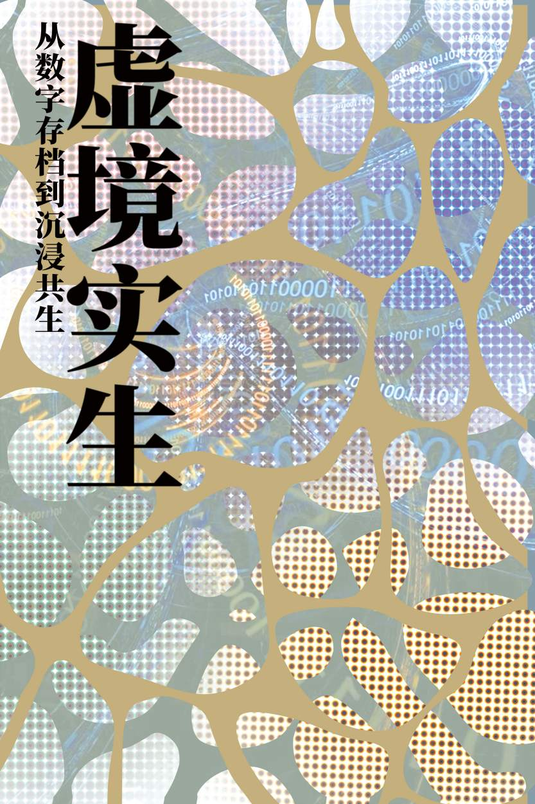

动态图形实验

动态图形实验主视觉

动态效果关键帧画面
作品介绍
《光影叙事》是一幅以光线与阴影为主题的海报设计作品。通过精心的构图和色彩处理，展现了光影如何塑造空间感和叙事性，探索了视觉元素如何讲述故事。
设计思路
本作品以"光影对话"为核心概念，采用了强烈的明暗对比和几何形状来创造视觉焦点。设计灵感来源于电影摄影中的光影运用，通过简化的视觉元素来引导观者的视线，构建出具有叙事性的画面。
技术要点
- 使用Adobe Photoshop进行图层蒙版和光影效果处理
- 通过黑白灰的层次表现空间深度
- 运用黄金分割比例进行构图
- 采用高对比度色彩方案增强视觉冲击力
学习收获
通过这个项目，我深入理解了光影在视觉设计中的叙事作用，掌握了明暗对比和空间构建的技巧。同时，我也学会了如何通过简化的视觉元素传达复杂的概念，提升了自己的视觉表达能力。